|
|
Artigos
/ stable_d
(Stable Diffusion)
Last Update: 28/06/2024
https://stable-diffusion-art.com/prompt-guide/
http://referenceangle.com/
Stable Diffusion é um modelo de aprendizagem lançado em 2022 que não para de
evoluir.
Não é preciso,
MAS é recomendado um SSD, a quantidade de leitura na hora do processamento é grande, CheckPoints/Model possuem 4GBs ou mais. Tambem é preciso um VGA da nVIDIA decente, alguns
dizem 8 outros que 4GB é o suficiente, hoje eu tenho uma 4060Ti, mas a
minha antiga 2070 Super funcionava perfeitamente.
Stable Diffusion
Stability
Matrix:
https://github.com/LykosAI/StabilityMatrix
Coloque o StabilityMatrix.exe na pasta onde deseja armazenas TODOS os
dados e selecione Portable Mode.
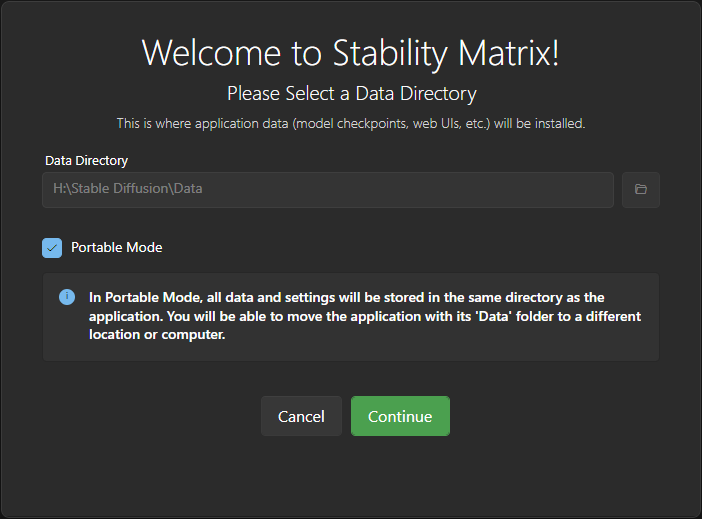
Instale o Stable Diffusion WebUI.
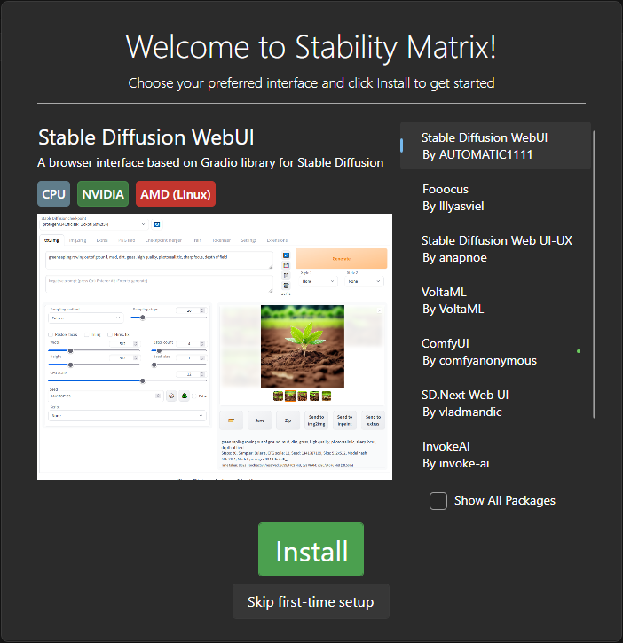
Caso a sua VGA seja fraca, va no
Launch/Options:
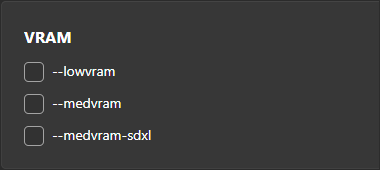
Essa 3 opções vão lhe ajudar, basicamente o processo vai ser lento mas não
vai dar erro.
Alguns CheckPoint/Models vão exigir mais VRAM de qualquer forma, nesse caso não ha nada
que possa ser feito.
Ignore todo o resto.
Na primeira vez o Launch demora um pouco mais, se voce iniciar sem
pegar nenhum CheckPoint/Model ele vai fazer o download automatico do
v1-5-pruned-emaonly, para fazer o download de algum Model basta ir no
Model Browser, nao esqueça de mudar o Period para AllTime.
Flat-2D Animerge, Anything V5, Cetus-Mix,
maturemalemix, MeinaMix e
MIX-Pro-V4.5+ColorBox são muito bons.
Launch vai abrir automaticamente o Stable Diffusion no seu Browser padrão.
Dentro do SD vamos ao basico.
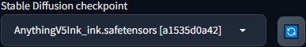
Stable Diffusion
CheckPoint, é uma IA que foi treinada por milhares de imagens em um
estilo.
Por isso, nao adianta pegar um Model onde o foco é Anime, não vai
sair Turma da Mônica.
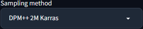
Sampling Method, remove o noise da imagem a cada passo do processo, DPM++ melhor
qualidade, Euler mais rapido.
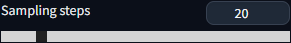
Sampling Steps, o numero de repetições ou iterações no processo da imagem.
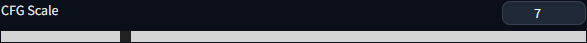
CFG Scale, orientação, é o quanto o CheckPoint vai seguir o seu Prompt,
1 é uma imagem
totalmente aleatoria, 30 vai ser algo bem linear.
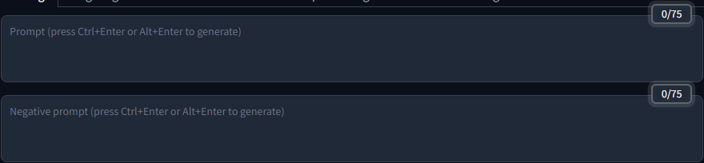
Prompt, aqui é onde o txt2img faz o seu trabalho. Se quiser ter uma ideia de bom Prompt, basta ir nesse site* e selecionar alguma imagem que
você goste.
BREAK - Cara bloco do
Prompt é de no maximo 75 tokens, adicionar BREAK especifica o inicio
e o fim de cada um. Exemplo: 1girl, white hair, BREAK, complicated
background
() - Sintaxes são uma forma de ajustar a força do token.
Exemplo: (white hair: 2.0), (waterfall: 0.5)
* - https://civitai.com/
Como exemplo usando o Counterfeit-V3.0, Sampling Method: DPM++ 2M
Karras, Sampling Steps: 20, CFG Scale: 7, Hires.fix Upscaler: R-ESRGAN 4x
Anime6B, 640x360, Seed 1437508078:
masterpiece, best quality, top quality, ultra highres, 8k hdr, 8k
wallpaper, huge file size, intricate details, sharp focus, realistic,
delicate, amazing, CG, finely detailed, beautiful detailed, colourful, full
body, cleavage, shiny skin, upper body, red lips, parted lips, 1girl,
looking at viewer, cinematic angle, cloudy sky,
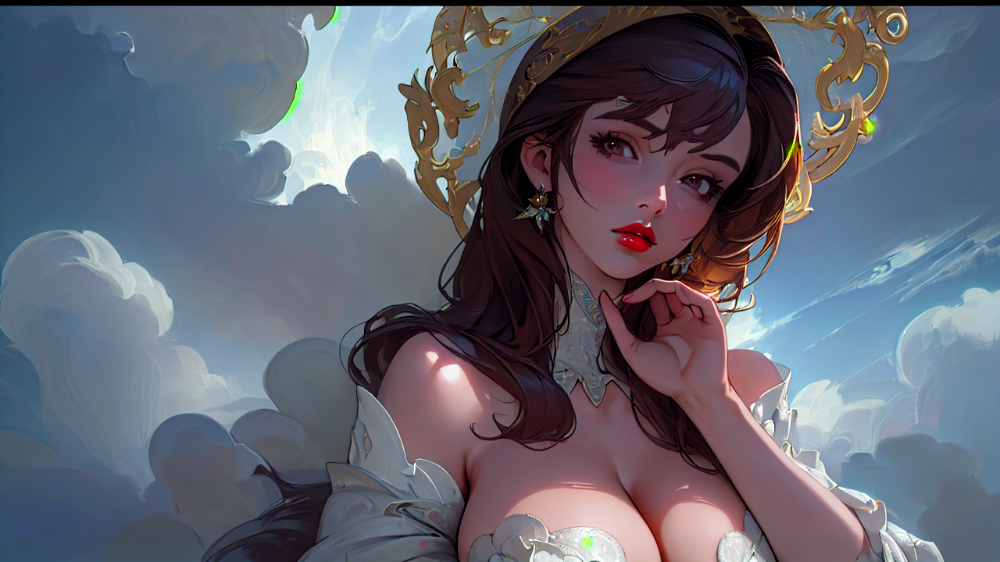
OK! Agora o Negative prompt, para excluir todos os "defeitos" vamos
dizer assim, existem alguns pacotes chamados Negative Embeddings, é só procurar
no Model Browser, tem 3 muito bons: easynegative, ng_deepnegative_v1_75t e
verybadimagenegative_v1.3, veryBadImageNegative é o que eu tive melhores
resultados, basta Add no Textual Inversion. Mas isso nao quer dizer que você nao pode usar o Negative prompt
para excluir algo bem específico como luvas, oculos, enfim.
verybadimagenegative_v1.3, text, jpeg artifacts, signature,
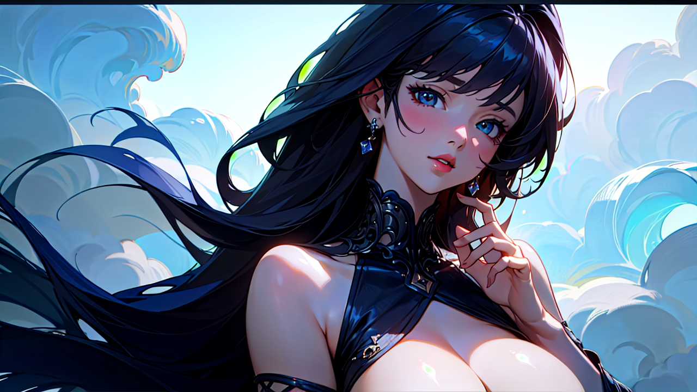
E por fim, dentro do Model Browser existe outra categoria interessante no
Model Type o LORA(Low Rank Adaptation), trata-se de um CheckPoint menor e bem específico,
um personagem por exemplo, usando o exemplo acima vamos fazer o download desse
LORA:
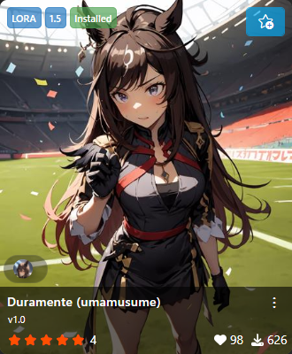
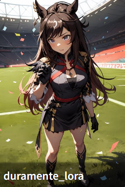
Add na aba Lora.
Nesse caso o <lora:duramente_lora:1> será
adicionado ao Prompt.
Não esqueça de Add a Trigger Words: duramente \(umamusume\), basta consultar
no Civitai*.
* -
https://civitai.com/models/161352/duramente-umamusume
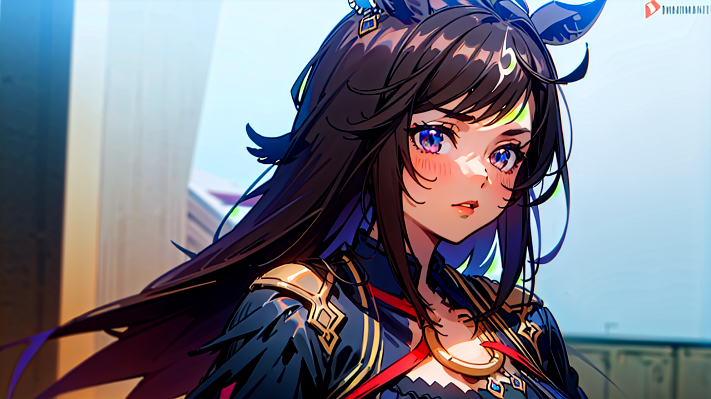
Isso é o basico.
InPaint:
Usando a imagem acima.
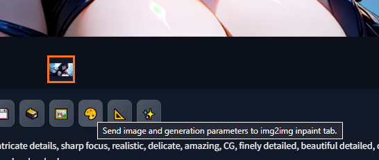
Como exemplo, vamos aplicar a mascara no rosto e marcar para trabalhar
APENAS a area marcada e Just resize (latent upscale).
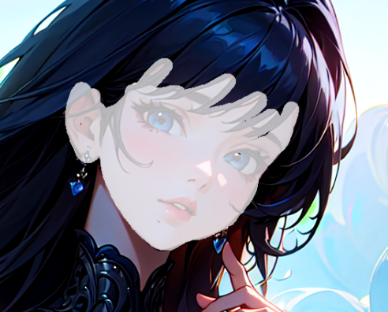
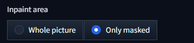
Aqui a gente pode Add mais detalhes no Denoising strength, e/ou você
tambem pode pedir para gerar uma nova imagem somente na area marcada mudando
o Seed(-1, Random).
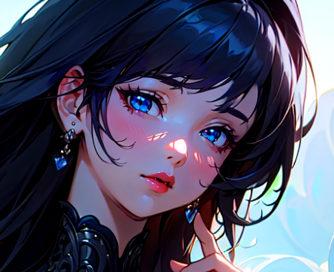
Para ter um melhor resultado
aconselho aplicar o InPaint em cada area da imagem, faz no rosto
depois cabelo, roupa, enfim. E tambem pode ser usando para eliminar detalhes
com o CFG Scale e enviando para o InPaint novamente com os detalhes
alterados.
ControlNet:
Extension/Install from URL, no URL for extension's git
repository coloque:
https://github.com/Mikubill/sd-webui-controlnet.git
Faça o Download de todos os .pth aqui* e coloque na pasta:
\Data\Packages\stable-diffusion-webui\extensions\sd-webui-controlnet\models\
(18.8 GB)
* -
https://huggingface.co/lllyasviel/ControlNet-v1-1/tree/main
OpenPose:
Vamos ultilizar os prompt dessa imagem* mas com Counterfeit-V3.0
* -
https://civitai.com/images/9543919
Counterfeit-V3.0,
Sampling Method: DPM++ 2M Karras, Sampling Steps: 30, CFG Scale: 7,
Hires.fix Upscaler: R-ESRGAN 4x Anime6B, 400x500, Seed
977010314
anime, girl, blue spike hair, messy hair, green short skirt, white long
sleeve, blue eyes, calm face, striped pantyhose
Negative prompt: ugly, deformed, noisy, blurry, distorted, out of
focus, bad anatomy, extra limbs, poorly drawn face, poorly drawn hands,
missing fingers, bad quality, medium quality, bad, nipples
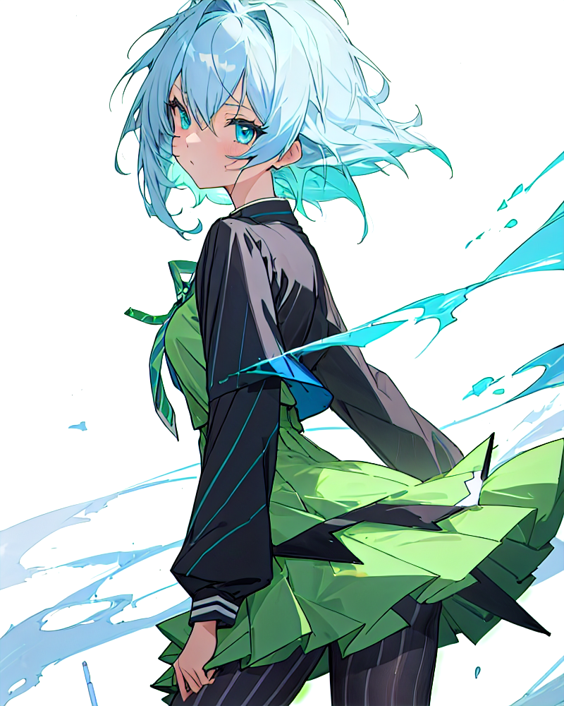
OK! Agora sem mudar nada no prompt vamos abrir o ControlNet embaixo do Seed.
Enable, Pixel Perfect, Allow Preview e OpenPose.
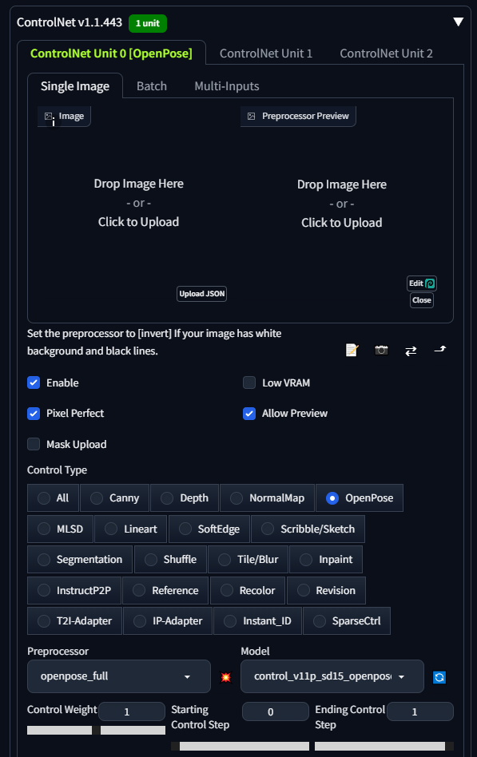
No Drop Image Here, vamos colocar uma imagem com a pose que a gente
deseja, exemplo:
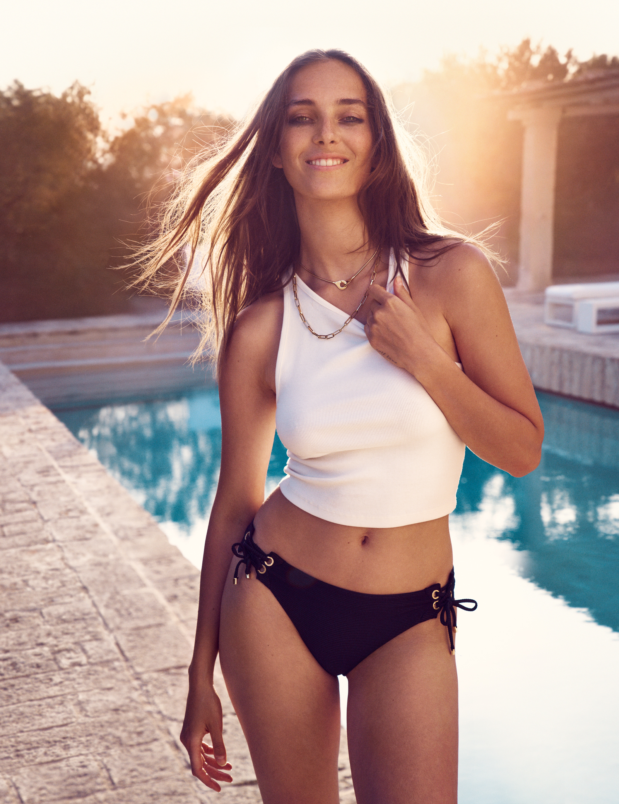
Logo em seguida apertar no
para ver o preview.
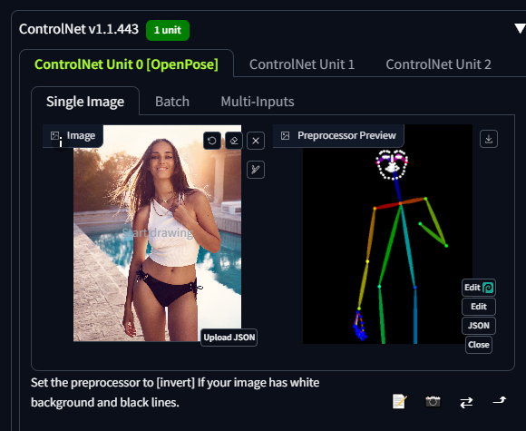
Generate
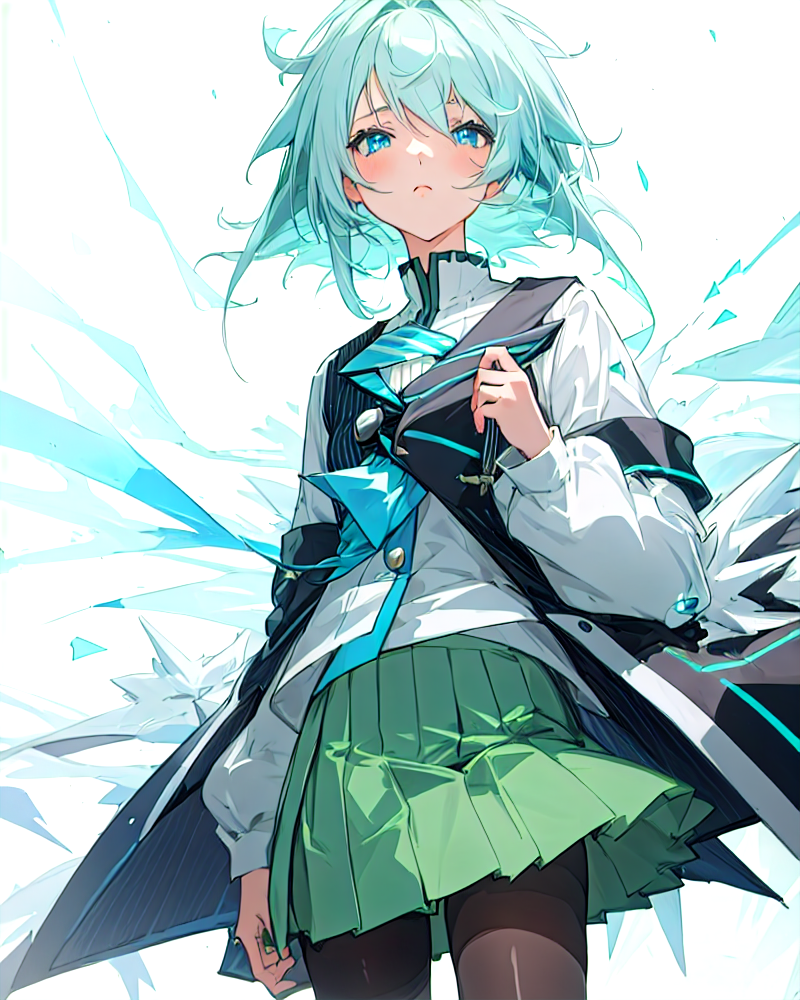
Pode ser Foto, Desenho, Pintura, qualquer coisa, desde que a imagem seja
limpa o OpenPose vai conseguir trabalhar.
Muito util para alguma pose bem especifica, porque mesmo descrevendo detalhadamente
no prompt nao tem comparação com o Modelo 3D, que por sinal é possivel
editar facilmente.
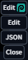
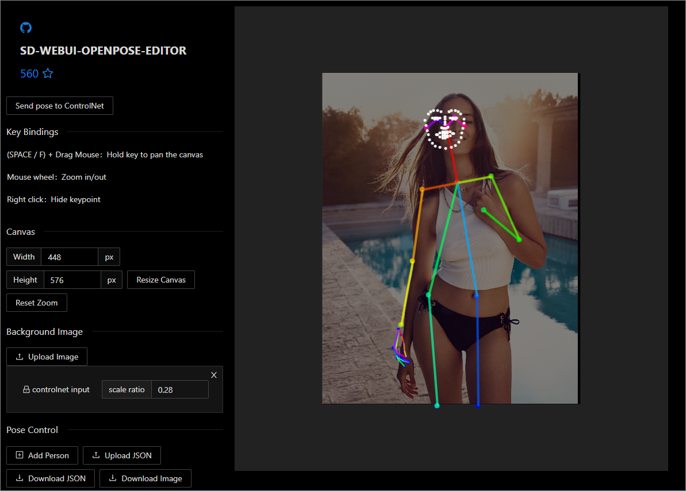
Caso seja algo mais especifico é só mudar o Preprocessor.
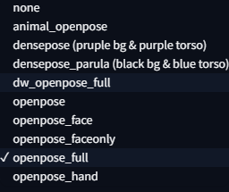
E, ainda é possivel pegar poses prontas no Civitai.
Preprocessor
no none e jogue o png que contem somente os ossos no
Drop Image Here.
https://civitai.com/models?tag=poses
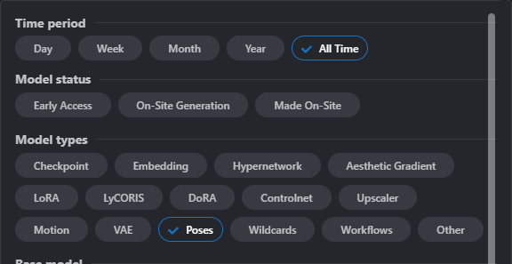
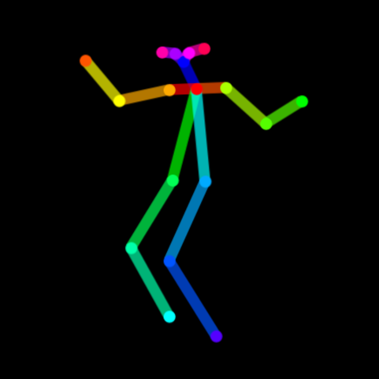
Outpainting:
Counterfeit-V3.0,
Sampling
Method:
DPM++ 2M SDE,
Sampling Steps: 30, CFG Scale: 8, Hires.fix Upscaler: R-ESRGAN 4x Anime6B,
512x1024, Seed
153110758
1girl, ponytail ,white hair, purple eyes, (dress:1.3), medium breasts,
collarbone, flowers and petals, (illustration:1.1), (perfect details:1.1),
landscape, background, rose, abstract
Negative prompt:
negative_hand-neg, verybadimagenegative_v1.3
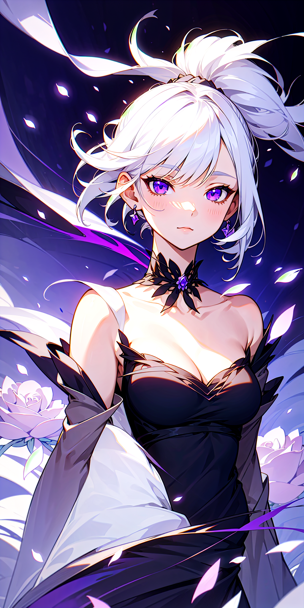
Usando a imagem acima, vamos supor que voce quer extender ela na horizontal,
mas sem perder a imagem original. Envie a imagem para o img2img
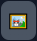 ,
selecione Resize and fill
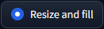 , no
meu caso vou colocar o Width em 1024. La em baixo no ControlNet, Enable
e Upload independent control image, arraste a imagem original para o
SD, selecione Inpaint
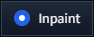 , e
no Preprocessor: inpaint_only+lama e Resize and Fill
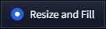 ,
todo o resto padrão.
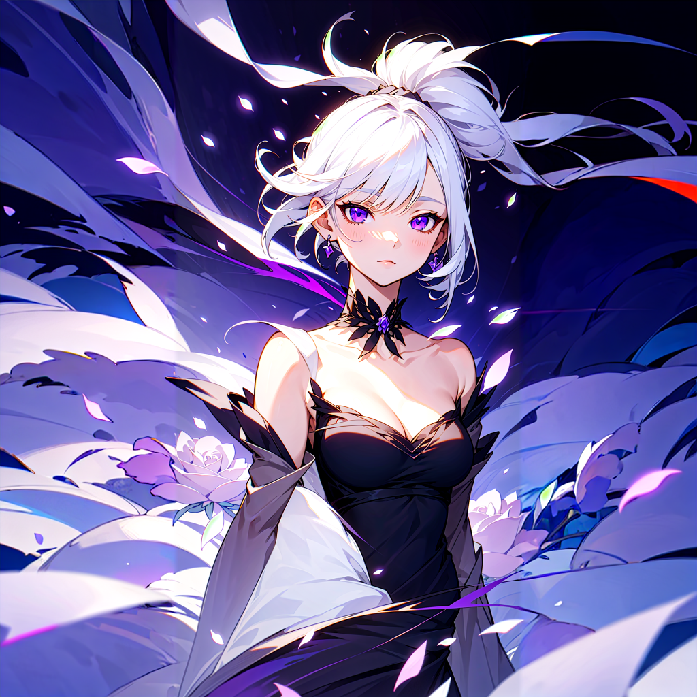
3D + Fixing Hands:
Usando o Clip Studio Paint EX
Pro e tudo o que aprendemos em cima, vamos para o proximo passo.
O Clip Studio Paint EX
é o mais fácil e sua licença não é cara (17/04/2024: R$211) mas
qualquer outro Software como XNALara e até a Unreal Engine é possivel fazer a
mesma coisa.
Pegar uma pose padrão do Clip Studio (Content ID：2077228).
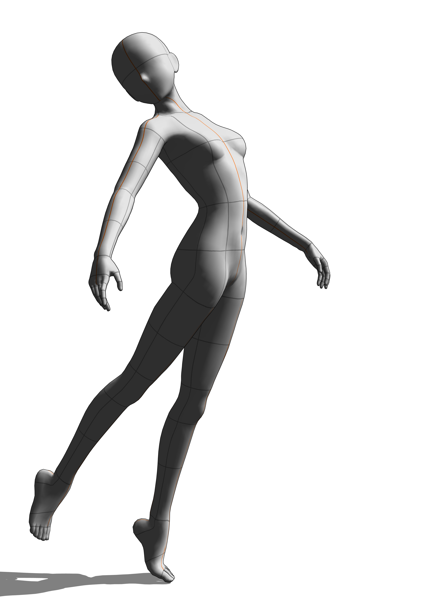
Jogar no OpenPose e usar o prompt:
Counterfeit-V3.0,
Sampling
Method:
DPM++ 2M SDE,
Sampling Steps: 30, CFG Scale: 8, Hires.fix Upscaler: R-ESRGAN 4x Anime6B,
500x700, Seed
1895928102
masterpiece, best quality, top quality, ultra highres, 8k hdr, 8k wallpaper,
huge file size, sharp focus, realistic, delicate, amazing, CG, finely
detailed, beautiful detailed, colourful, full body, wide hips, thick thighs,
shiny skin, yellow ribbon, ponytail hair, white sneakers, school uniform,
sailor collar, 1girl, looking at viewer, deep shadows, simple background,
dynamic composition, amazing moment, blue skirt,
Negative prompt:
negative_hand-neg, verybadimagenegative_v1.3, umbrella, weapon
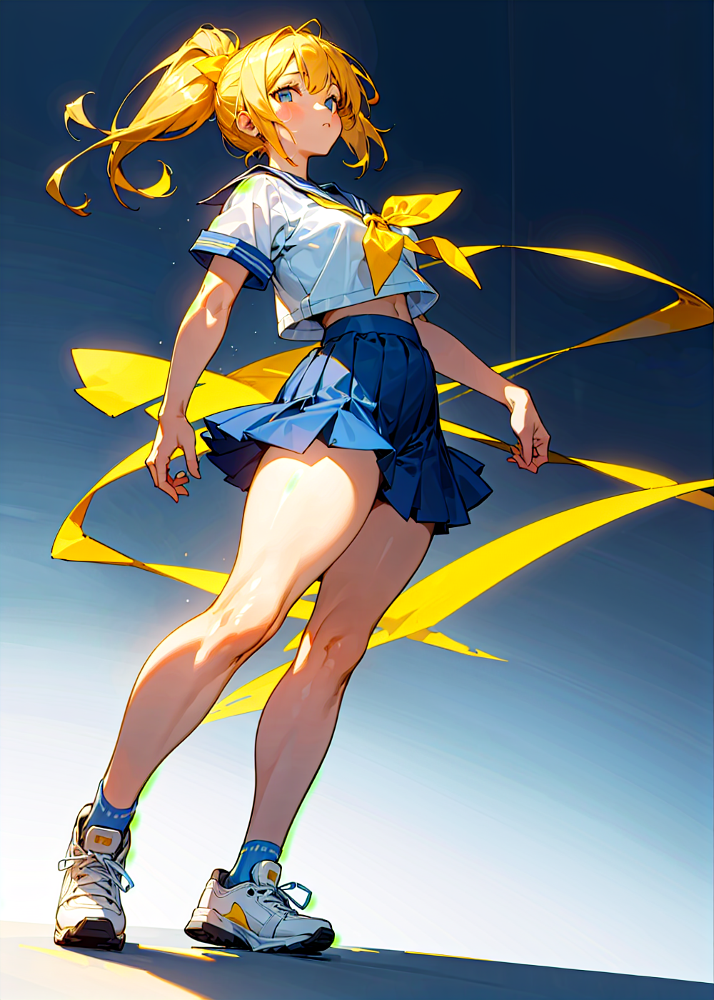
Claro que o
OpenPose
mesmo colocando o ControlNet is more important não reflete
perfeitamente o 3D, mas usando o que a gente ja aprendeu, ficou bom como
demonstração.
Stable Diffusion é famoso por nao ser muito bom com mãos, é perfeitamente
possível com o InPaint cobrir as mãos ficar rodando o algoritmo até ter
uma arte satisfatória, mas aqui vamos usar o 3D também, ainda usando o Clip
Studio a gente vai salvar a ArtWork criada pelo SD e colocar por cima as mãos
3D, mais ou menos assim:
Obs: Como eu usei uma Pose pronta, nao da para Add uma textura.
Se começar do zero é possivel editar o 3D Primitive Texture.
https://ask.clip-studio.com/en-us/detail?id=9687
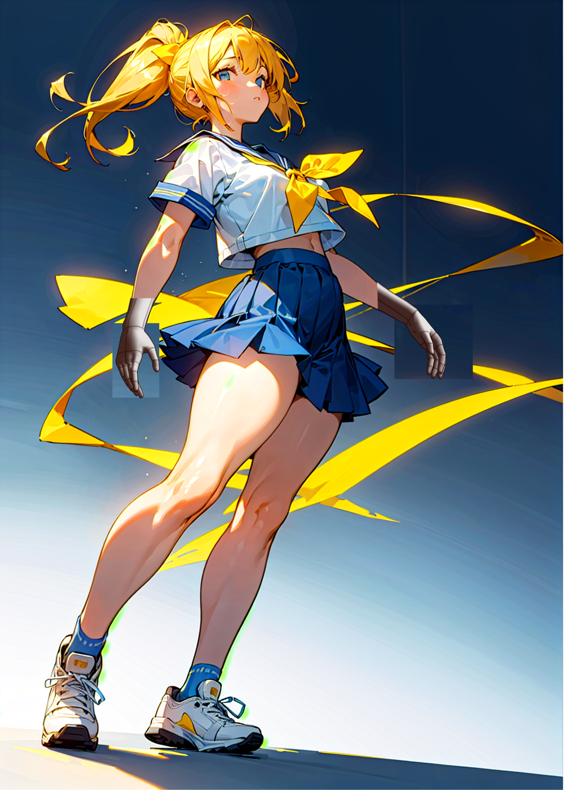
Agora vamos aplicar o InPaint nas mãos, uma mão de cada vez.
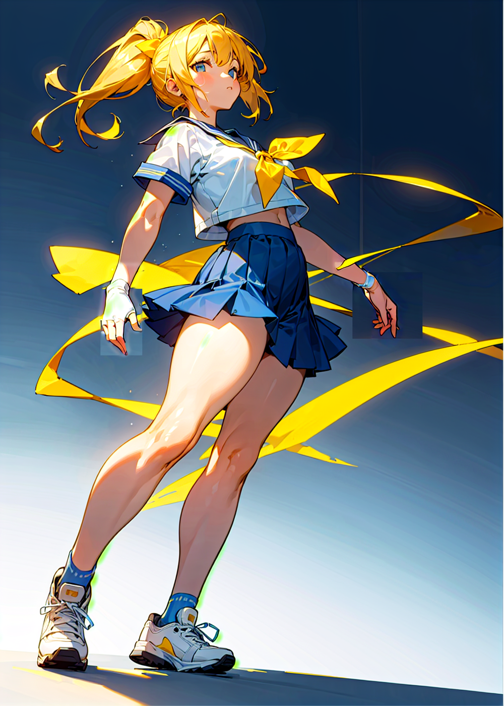
Look at that, first try.
Bem grosseiro, editado no MSPaint so para mostrar os resultados.
O certo seria substituir as mãos pelo 3D de forma
correta, respeitando as bordas e o fundo usando PhotoShop ou o próprio Clip
Studio.
Não sei de onde o SD tirou essa luva e aquele bracelete ali mas não é nada que adicionar gloves
e bracelet
no Negative prompt não resolva.
Para apagar o Stable Diffusion basta deletar a pasta Data.
|
|